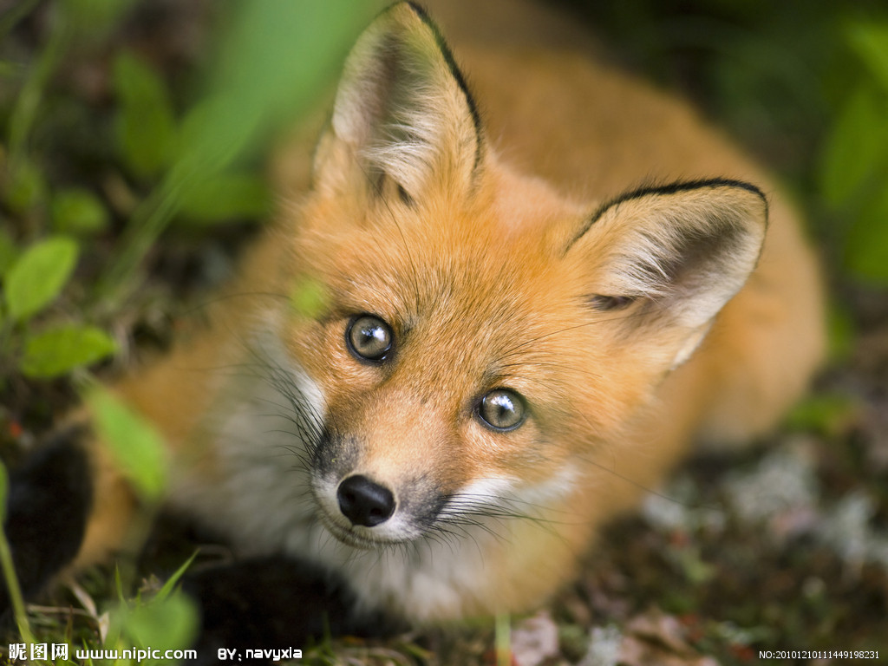
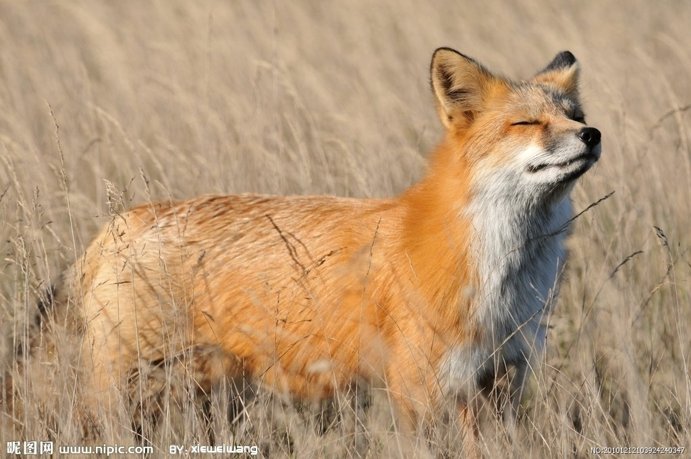
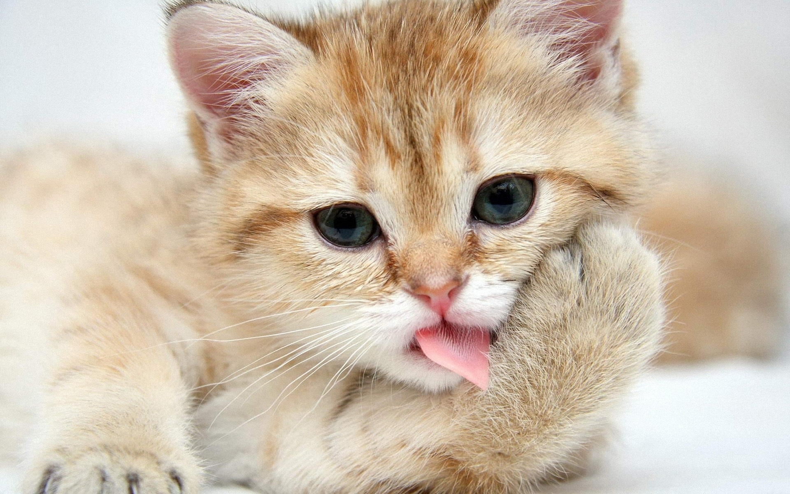
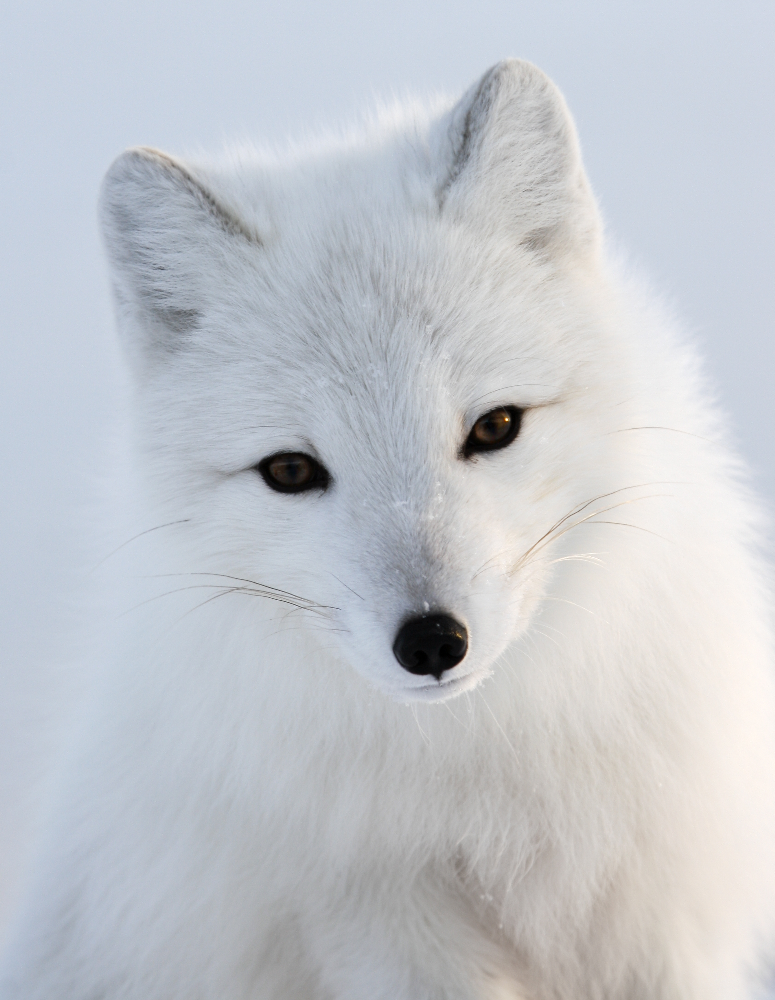

- 狐（學名Vulpes)，俗稱狐狸，在動物分類學上，屬於食肉目犬科，目前人工主要飼養的有銀狐(Vulpes vulpes fulva)，為赤狐的一個亞種。狐狸繁殖率高，抗病力強，食性雜，好飼養。中國主要有赤狐，分佈全國大陸。沙狐分佈新疆、內蒙、青海、甘肅、西藏等地。

- 狐狸 狐狸是一種小型食肉動物，屬於犬科（dog family），體長約70厘米，尾長約45厘米。毛色變化很大，一般呈赤褐、黃褐、灰褐色，耳背黑色或黑褐色，尾尖白色。尾基部有一小孔，能分泌惡臭。雌性狐狸被稱為雌狐（vixen）；狐狸幼仔被稱為幼獸（cubs, kits）或幼畜（pups）。狐狸是一種聰明、警惕性強的動物，出現在無數的童話、小說和諺語中。對於捕獵者來說捕捉狐狸很具挑戰性，於是產生了捕狐運動。狐皮是一種較珍貴的毛皮，為此出於商業目的，很多人獵殺或飼養狐狸。很多地區，狐狸有時會襲擊家禽，但在另一方面，狐狸很有用處，因為它能夠幫助捕食嚙齒動物（rodents）和其他有害動物。

- 狐狸身體纖瘦，毛長且厚。體長加尾長2到3英尺（60到90厘米）。狐狸毛茸茸的尾巴是頭部和身體的一半或2/3，尖嘴。大多種狐狸耳朵大、直立、呈三角形。不同種類的狐狸顏色不同，即使同類的狐狸顏色也有區別。包括紅色、黃色、淺棕或深棕色，各種程度的灰色、白色或黑色。 狐狸的眼睛能夠適應黑暗，瞳孔橢圓，發亮，類似於貓的眼睛，這一點狐狸和其他擁有圓形瞳孔的犬科動物不同。狐狸具有敏銳的視覺、嗅覺和聽覺。大部分狐狸具有刺鼻的味道，由尾巴根部的臭腺放出。

- 銀狐 狐棲息森林、草原、半沙漠、丘陵地帶，居樹洞或土穴中，傍晚外出覓食，天明始歸，雜食蟲類、兩棲類、爬行類、小型鳥獸和野果等。生殖期結成小群，其他時期單獨生活。

- 孟加拉狐 除了包括狐屬的動物外，狐有時也可以包括狐亞科其它屬的動物：北極狐屬Alopex - 北極狐（又名藍狐）。大耳狐屬Otocyon - 大耳狐。灰狐屬Urocyon - 灰狐和島嶼灰狐。狐屬 Vulpes - 11種「真正的」狐，包括赤狐。 孟加拉狐Vulpes bengalensis 阿富汗狐Vulpes cana 南非狐Vulpes chama 沙狐 Vulpes corsac 藏狐Vulpes ferrilata 敏狐 Vulpes macrotis 蒼狐 Vulpes pallida 呂佩爾狐 Vulpes rueppellii 草原狐Vulpes velox 赤狐 Vulpes vulpes 耳廓狐Vulpes zerda

- 狐的角色性質早先是圖騰、瑞獸，後來是妖獸、妖精，即使在它被視為狐神、狐仙受到崇拜時，也還是妖精。狐神、狐仙從未列入祀典，一直屬淫祀範圍，就因為狐神、狐仙之不雅。因此，狐文化前期是圖騰文化和符瑞文化，後期是妖精文化，妖精文化是主要方面。作為妖精，狐妖是龐大妖精群中無與倫比的角色，堪稱妖精之最。狐妖在從宗教民俗文化進入審美文化后經歷了全新的價值判斷和審美改造，成為最具魅力的審美意象。 傳說在東亞古代傳說中，多年修鍊的狐狸可以成狐狸精，變成人形，發人語，譬如章回小說《封神演義》中迷惑紂王的妲己就是吸去人的魂魄，再由她的軀殼變成絕色美女。文言短篇小說集《聊齋志異》很多篇目都與狐狸精有關。

- 該犬原產於日本，其真正的起源則可追溯至北極附近的雪橇犬和瑞士土犬雜交後代史必滋犬。這種「尖嘴犬」一直為德國日耳曼民族所喜愛；屬於這種形態的犬種尚有博美犬、阿拉斯加雪橇犬和愛斯基摩犬等。大約在日本大正13年，由白色的德國狐狸犬與日本犬雜交，改良培育而成為該犬；1913年該犬在日本已成為一種極受歡迎的犬種，1952年被正式承認為獨立犬種。